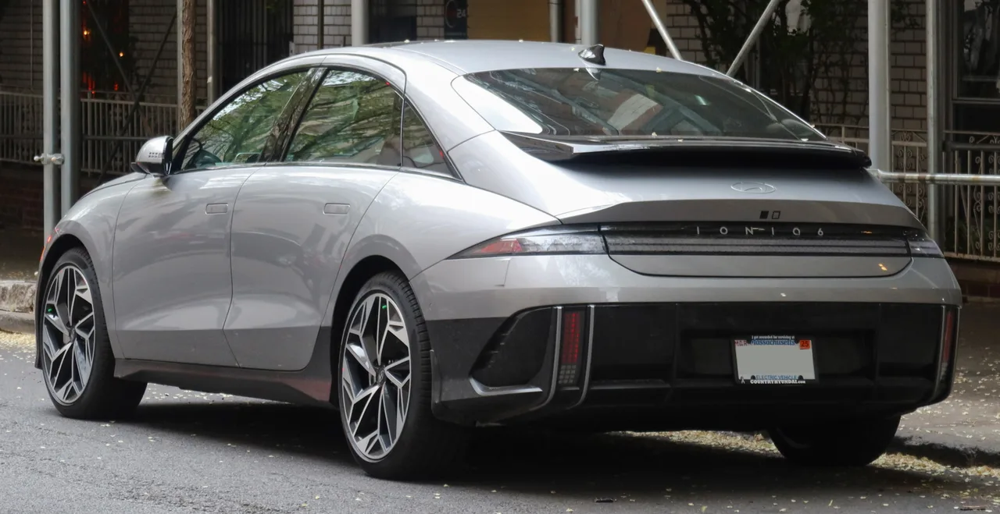

▲ 현대 아이오닉6 — 2026년 7월 미국 판매량이 76대까지 떨어지며, 현대차는 일반형 모델을 2026년형 라인업에서 제외했다
아이오닉5, 아이오닉9과 함께 현대차 전동화 라인업의 한 축을 맡았던 아이오닉6가 미국에서 무너지고 있습니다. 2026년 7월 판매량은 76대. 전년 동월 949대와 비교하면 92% 감소한 수치입니다. 1~7월 누적으로도 1,317대에 그쳐 전년 동기 대비 82% 줄었습니다. 2023년 1만2,999대를 팔던 차가, 3년 만에 존재감 자체가 흐려진 셈입니다.
1. 76대 — 숫자로 보는 붕괴
아이오닉6의 하락세는 하루아침에 벌어진 일이 아닙니다. 2023년 미국 판매 12,999대를 정점으로, 2024년 12,264대, 2025년 10,478대로 완만하게 줄어들다가 2026년 들어 낙폭이 가팔라졌습니다. 7월 한 달만 놓고 보면 76대, 이는 전년 동월(949대) 대비 92% 감소한 수치입니다. 1~7월 누적 판매도 1,317대로 전년 동기 대비 82% 줄었습니다. 완만한 하락이 아니라, 사실상 시장에서 밀려나는 속도로 봐야 할 숫자입니다.
| 연도 | 판매량 |
|---|---|
| 2023년 | 12,999대 |
| 2024년 | 12,264대 |
| 2025년 | 10,478대 |
| 2026년 상반기 | 1,241대 |
| 2026년 7월(단월) | 76대 |

▲ 아이오닉6 후면부 — 공기저항계수 0.21의 유선형 디자인은 효율성에서는 호평받았지만, 대중적 SUV 수요를 흡수하지는 못했다
2. 왜 하필 세단인가 — 미국 시장의 SUV 쏠림
아이오닉6 부진의 첫 번째 원인은 차체 형태 자체에 있습니다. 미국 소비자들은 높은 시야와 넉넉한 적재성을 갖춘 SUV·크로스오버를 세단보다 압도적으로 선호합니다. 같은 E-GMP 플랫폼을 쓰는 아이오닉5가 상대적으로 선전하는 것과 달리, 세단 형태인 아이오닉6는 처음부터 미국 시장에서 불리한 출발선에 서 있었던 셈입니다. 전기차 세단이라는 포지션 자체가, 내연기관 시절부터 이어진 '미국은 SUV의 나라'라는 공식 앞에서 힘을 쓰지 못하고 있습니다.
3. 테슬라 모델3와 54배 격차, 그리고 관세라는 벽
경쟁 구도도 가혹합니다. 2026년 상반기 아이오닉6가 1,241대 팔리는 동안, 테슬라 모델3는 66,616대가 팔렸습니다. 약 54배 격차입니다. 테슬라는 촘촘한 슈퍼차저 충전망과 가격 경쟁력, 압도적 브랜드 인지도로 세단형 전기차 시장을 사실상 독점하다시피 하고 있습니다. 여기에 구조적인 약점도 있습니다. 아이오닉5와 아이오닉9은 조지아주 현지 공장에서 생산되지만, 아이오닉6는 한국에서 생산해 수출하는 물량이라 관세 부담이 그대로 가격에 반영됩니다. 같은 브랜드 안에서도 '현지생산이냐 수입이냐'가 가격 경쟁력을 가르는 변수가 된 셈입니다.
| 모델 | 판매량 |
|---|---|
| 아이오닉6 | 1,241대 |
| 테슬라 모델3 | 66,616대 |
| 격차 | 약 54배 |

▲ 테슬라 모델3 — 2026년 상반기 미국에서 66,616대가 팔리며, 같은 기간 아이오닉6(1,241대)와 약 54배 격차를 벌렸다
4. 디자인은 개성, 시장은 무난함을 원했다
아이오닉6는 출시 당시 공기저항계수 0.21이라는 압도적인 효율성과, 유선형 실루엣이 만들어내는 독특한 외관으로 주목받았습니다. 하지만 이 개성이 오히려 대중 수요 확대에는 발목을 잡았다는 평가도 나옵니다. 세단이라는 태생적 한계에, 호불호가 갈리는 디자인까지 겹치면서 '효율은 최고, 대중성은 글쎄'라는 평가가 굳어진 셈입니다. 기술적 완성도와 시장에서의 성공이 항상 비례하지는 않는다는 걸 보여주는 사례이기도 합니다.

▲ 아이오닉6 N — 현대차는 일반형 대신 641마력 고성능 N 모델로 한정 판매하는 쪽으로 방향을 틀었다
5. 현대차의 선택: 일반형 대신 N으로
결국 현대차는 승부수를 바꿨습니다. 일반형 아이오닉6를 2026년형 미국 라인업에서 제외하고, 고성능 버전인 아이오닉6 N을 한정된 수량으로 판매하는 쪽을 택했습니다. 대중 판매로 승부하기 어렵다면, 확실한 마니아층이 있는 고성능 모델로 브랜드 이미지라도 지키겠다는 전략으로 읽힙니다. 아이오닉5·아이오닉9이 각자의 자리에서 선전하는 것과 달리, 세단형 아이오닉6는 사실상 '대중 판매'라는 원래의 역할을 내려놓게 된 셈입니다. 다음 세대 완전변경 모델이 이 흐름을 뒤집을 수 있을지가 관건입니다.